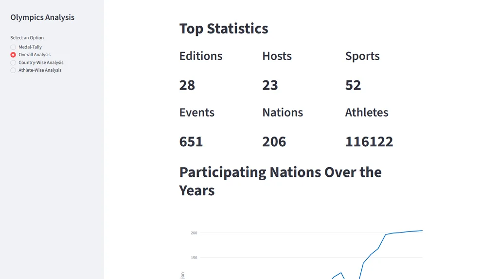
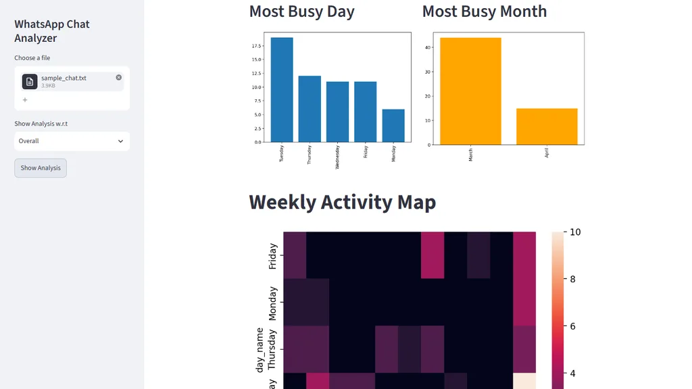
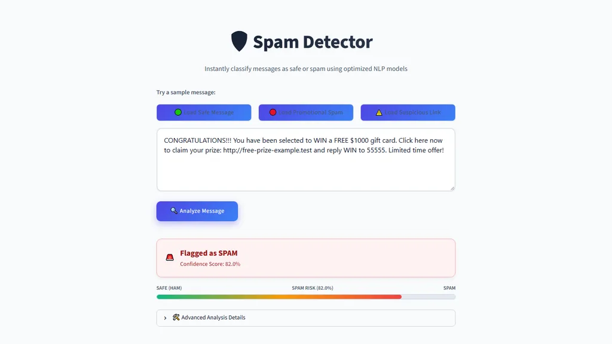
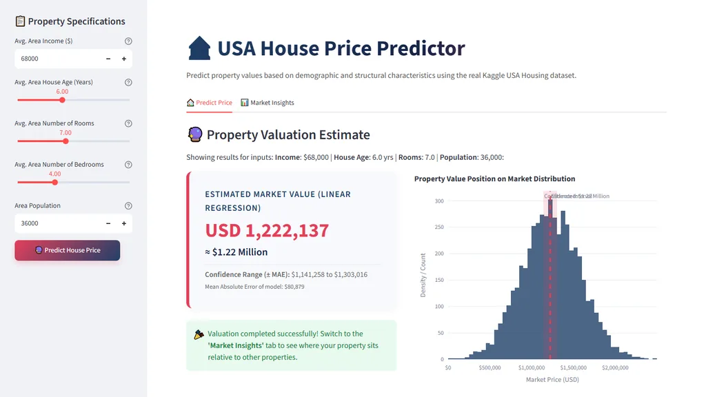

Python / SQL
Machine Learning
Streamlit Web Apps
Secure Application Design
Python / SQL
Machine Learning
Streamlit Web Apps
Secure Application Design
Ahmed Mustafa
Software Engineering undergraduate at MUET, building machine learning models and data apps in Python.
Currently a Full Stack AI Engineer at ACEVA Technologies. Looking for a software engineering role, internship or junior, on a professional engineering team.
About
Software engineering student with a focus on data and ML.
Software Engineering undergraduate at MUET (CGPA: 3.17/4.00) with technical strengths in Python/SQL, machine learning model development, and secure application design. Seeking a software engineering role to apply these skills on a professional engineering team.
- Education
- B.Eng. in Software Engineering, Mehran University of Engineering & Technology (MUET), Hyderabad, PK. CGPA 3.17 / 4.00.
- Relevant coursework
- Software Development, Data Structures & Algorithms, Machine Learning, Database Systems, Information Security, Software Quality Assurance.
- Languages
- Sindhi (Native), Urdu (Fluent), English (Professional Proficiency).
Projects
Five projects, from data to deployment.
Every image below is a screenshot of the real application running, captured at 1440×900. Click a screenshot to enlarge it.



Olympics Data Analysis Web App
[Streamlit]- Built a 4-module analytics platform (Medal Tally, Overall Analysis, Country-Wise, and Athlete-Wise performance) covering 120+ years of Olympic data.
- Processed and analyzed 271,116+ athlete records (athlete_events.csv, noc_regions.csv) using Pandas; built interactive Plotly dashboards and Seaborn heatmaps to surface gender participation trends, event evolution, and top-athlete profiling.
Technical Architecture & Decisions
Raw Olympic records (CSV, 271,116 rows)
↓
Summer Games filter + NOC region merge (Pandas)
↓
Team-medal deduplication for country tallies
↓
Plotly line charts, Seaborn heatmaps, Streamlit UI
- Problem & decision: team events (hockey, football) list every medal-winning athlete as a separate row, which inflates national tallies. The tally helper drops duplicates on
Team, NOC, Games, Year, City, Sport, Event, Medalbefore summing, while athlete-level views keep the full rows. - Engineering trade-off: the whole dataset is held as an in-memory DataFrame behind
st.cache_data, so there is no database to run, but the app has to fit within the Streamlit Cloud container memory.



WhatsApp Chat Analyzer
[Streamlit]- Built an NLP-powered web app that ingests exported WhatsApp chat text files (media excluded) and generates 7+ analytical insights: activity timelines, emoji analysis, word clouds, weekly heatmaps, and per-user behavioral breakdowns across multi-user group chats.
- Designed a 3-module pipeline (preprocessor → helper → app) with a custom Hinglish stop-word filter to support accurate multi-user text analysis.
Technical Architecture & Decisions
Raw chat export (.txt) uploaded in the browser
↓
Regex split on timestamps, author/message separation (preprocessor.py)
↓
Date features, Hinglish stop-word filter, URL and emoji extraction (helper.py)
↓
Timelines, activity heatmap, word cloud, emoji share (Matplotlib, Seaborn)
- Problem & decision: exports differ between devices, and some insert a narrow no-break space before AM/PM. The timestamp regex accepts both separators, and lines without an author are tagged as group notifications so they do not count as a user.
- Engineering trade-off: the upload is parsed in memory for the session and never written to disk, which protects private chats but means the file must be re-uploaded after a refresh.
Mobile Inventory System
[Desktop / SQL]- Built a modular inventory management application enabling users to add, update, and track stock records, generate transaction logs, and monitor inventory levels through an intuitive interface.
- Designed a relational database schema for products, stock, and transactions, implementing CRUD operations with input validation to maintain data accuracy and consistency.
Source code not yet public.


Spam Email Detector
[LIVE]- Built a text classification model to distinguish spam from legitimate emails, applying NLP preprocessing including tokenization, stop-word removal, and TF-IDF vectorization.
- Achieved 97.75% accuracy, 99.21% precision, 83.89% recall, and a 90.91% F1-score with a Random Forest classifier (best of 3 models compared) on the test set.
- Accuracy
- 97.75%
- Precision
- 99.21%
- Recall
- 83.89%
- F1-score
- 90.91%
Technical Architecture & Decisions
SMS spam dataset (spam.csv, ham/spam labels)
↓
clean_text: lowercase, strip punctuation and digits, NLTK tokenize, stop-words, Porter stemming
↓
TF-IDF (3,000 features), stratified 80/20 split
↓
Naive Bayes vs Logistic Regression vs Random Forest, best by F1 saved with metrics JSON
- Problem & decision: the dataset is imbalanced, so
train.pypicks the best model by F1-score rather than accuracy. Random Forest (100 trees) won on F1, and its metrics are written tomodels/model_metadata.json, which the app reads to show the comparison table. - Engineering trade-off: the same
clean_textfunction is shared by training and inference so the live app tokenizes exactly as the model was trained; NLTK resources are downloaded on first run.



House Price Prediction
[LIVE]- Built a regression model to predict property prices from features such as location, area, and amenities, applying feature engineering and data cleaning.
- Achieved an RMSE of $100,444 and an R² of 0.918 with a Linear Regression model (best of 2 models compared) on the test set.
- RMSE
- $100,444
- R²
- 0.918
- MAE
- $80,879
Technical Architecture & Decisions
Kaggle USA Housing dataset (5,000 rows, Address column dropped)
↓
Five numeric features: area income, house age, rooms, bedrooms, population
↓
StandardScaler, 80/20 split, Linear Regression vs Random Forest
↓
Best model by R² saved with scaler; Streamlit app with Plotly charts
- Problem & decision: the relationships in this dataset are close to linear, so plain Linear Regression beat a 100-tree Random Forest on the held-out set (R² 0.918 vs 0.882) and was kept as the simpler model.
- Engineering trade-off: the app reports each estimate with a ±MAE range ($80,879, stored in
models/metadata.joblib) instead of a single number, and overlays the inputs on the market scatter plots so the prediction can be sanity-checked against real listings.
Other work
-
Credit Card Fraud Detection Jupyter notebook: logistic regression on an under-sampled Kaggle credit card transactions dataset.GitHub
-
File Encryption & Integrity Tool Tkinter desktop app: Fernet file encryption and decryption with SHA-256 integrity verification (Information Security semester project).GitHub
Skills
Technical skills.
Programming
ML / Data Science
Data Management
Software Development
App Architecture
Security
Soft Skills
Experience
Professional Experience
Full Stack AI Engineer
ACEVA Technologies
- Working as a Full Stack AI Engineer, contributing to the design and development of AI-integrated web applications across front-end and back-end layers.
AI/ML Intern (Remote)
SAFEX Solutions
- Completed an 8-week remote internship in AI/ML, gaining hands-on exposure to applied machine learning workflows, model development, and project execution.
AI/ML Fellow
BrainWave
- Completed an AI/ML Fellowship, strengthening applied machine learning and model development skills through structured, project-based learning (concurrent, part-time alongside the SAFEX Solutions internship and ACEVA role).
Leadership & Activities
Director of Visuals
WOH – Sindh Chapter
- Led visual content strategy for a 50+ member chapter, delivering 10+ campaign assets per semester with 100% brand consistency.
- Coordinated 3 cross-functional sub-teams across 10+ events and mentored 5+ junior designers, cutting revision cycles and turnaround time by ~30%.
Director of Visuals
WOH – MUET Chapter
- Directed visual content strategy for the MUET chapter for one year prior to taking on the Sindh Chapter role, building the foundation for the chapter's design and branding processes.
Campus Ambassador
Devsinc – MUET Chapter
- Representing Devsinc at MUET, promoting the company's programs and opportunities and coordinating outreach activities within the student community.
Volunteer
Sindh Tech
- Volunteering in support of technology community initiatives and outreach programs across Sindh.
Certifications
Certifications
NAVTTC
Advanced Python Programming
View Certificate
DataCamp
Introduction to NumPy
View Certificate
NFTP
Web Development
View Certificate
Coursera
Prompt Engineering for Developers
View Certificate
Contact
Get in touch.
+92 319 476 4775
linkedin.com/in/ahmed-mustafa-baa587290
github.com/ahmedmustafa28
Hyderabad, Sindh, Pakistan